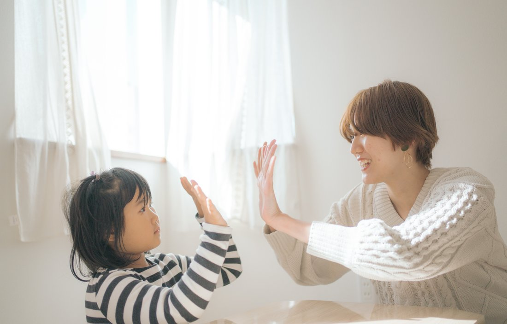

PROFILE
社会福祉士・子ども発達支援専門家
社会福祉士の資格と、自分自身の経験から生まれた視点で、子どもと家族に関わる情報を発信しています。動画から来てくださった方も、ゆっくりのぞいていってください。
YOUTUBE
発達障害にまつわるリアルな悩みに、専門家としての視点でお答えしています。
ここに代表的な動画が再生埋め込みされます
バズった動画のURLを教えてくださいMOND / 匿名相談
名前を出さずに、発達障害や子育ての悩みを相談できる場所です。「読解問題ができるか不安」「手帳取得、迷っています」のような、ちょっとした相談も大歓迎です。
顔も名前も出さずに、スマホからひとこと送るだけ。
いただいた質問は、YouTube「発達でこぼこ相談室」のテーマになることがあります。あなたの「ちょっと聞きたい」が、誰かを助ける動画に変わるかもしれません。
匿名で質問してみるLINE / 個別相談
個別のご相談や家庭教師のお問い合わせは、公式LINEから直接どうぞ。

STORY
中学1年生の夏、私は突然学校に通えなくなりました。「自分の居場所がない」「どう生きていけばいいのか分からない」——そんな感覚と、ずっと向き合っていました。
大学で出会った児童自立支援施設での実習をきっかけに、本気で社会福祉士を目指すように。今は家庭教師という仕事を通して、福祉と教育のあいだで、制度の狭間にいるご家庭を支える活動を続けています。
小学生の頃は学校が大好きな、活発な子どもでした。けれど中学1年生の夏に突然学校へ行けなくなり、心療内科に通いながら中学2年生の1年間を病棟で過ごしました。
高校は三重県の全寮制高校へ進学。親元を離れ、自由な環境で過ごした時間が「自分で生きていく感覚」を少しずつ取り戻すきっかけになりました。
大学では助産師を目指して看護学科に進学しましたが、再び大学に通えなくなり、母の勧めで福祉学科へ転向します。
転機は児童自立支援施設での実習です。虐待やネグレクトを経験した子どもたちと出会い、実習最終日に「ゆうか先生のおかげで、人生変わりました」と言われ、初めて「この仕事をしたい」と心から思えました。
国家試験に合格後、先輩に勧められて始めたのが家庭教師の仕事です。出会う子どもたちの多くが発達特性や生きづらさを抱えていて、診断はあっても支援につながれない"グレーゾーン"の家庭の存在に気づいていきました。それはかつての私自身や、弟を育てながら必死だった母の姿とも重なります。
だからこそ私は、福祉制度だけに頼らない民間教育という立場で、制度の外側にいるご家庭にも支援を届けたいと考えています。海外の特別支援教育も学びながら、誰もが公平に機会を得られる"ノーマライゼーション"の実現を目指しています。